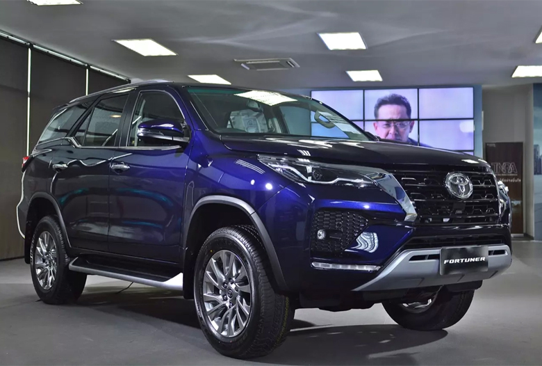
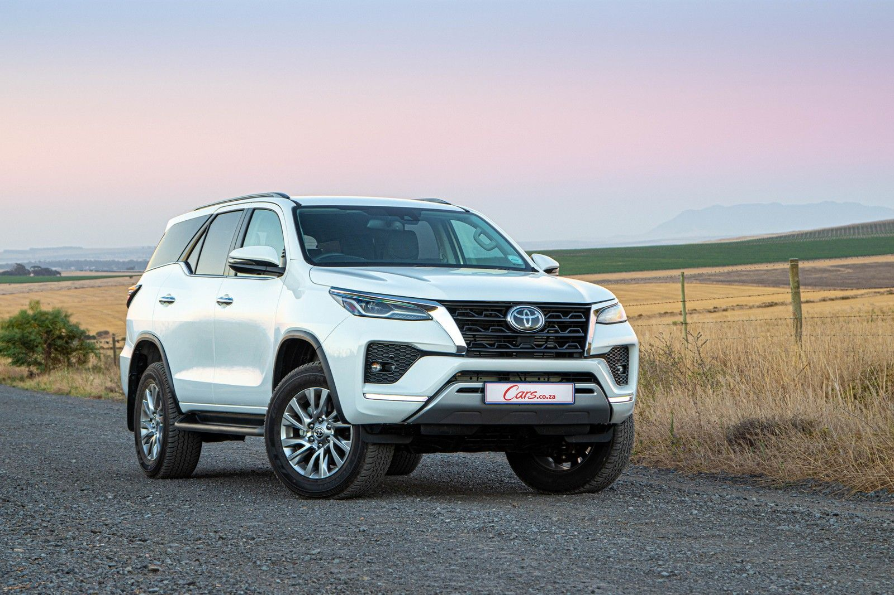

Toyota Fortuner (2021)
 The Toyota Fortuner, also known as the Toyota SW4, is a mid-size SUV manufactured by the Japanese automaker Toyota since 2004. Built on the Hilux pickup truck platform, it features two/three rows of seats and is available in either rear-wheel drive or four-wheel drive configuration. It is a part of Toyota's IMV project for emerging markets, which also includes the Hilux and the Innova. The name Fortuner is derived from the English word fortune.
Manufacturer: Toyota- Production: November 2004 – present
- Assembly: Japan
- Designer: Yaguchi
- Colors Available: Grey, Black, White, Blue
- Price: R 78,000 (Payment over 24 months available)